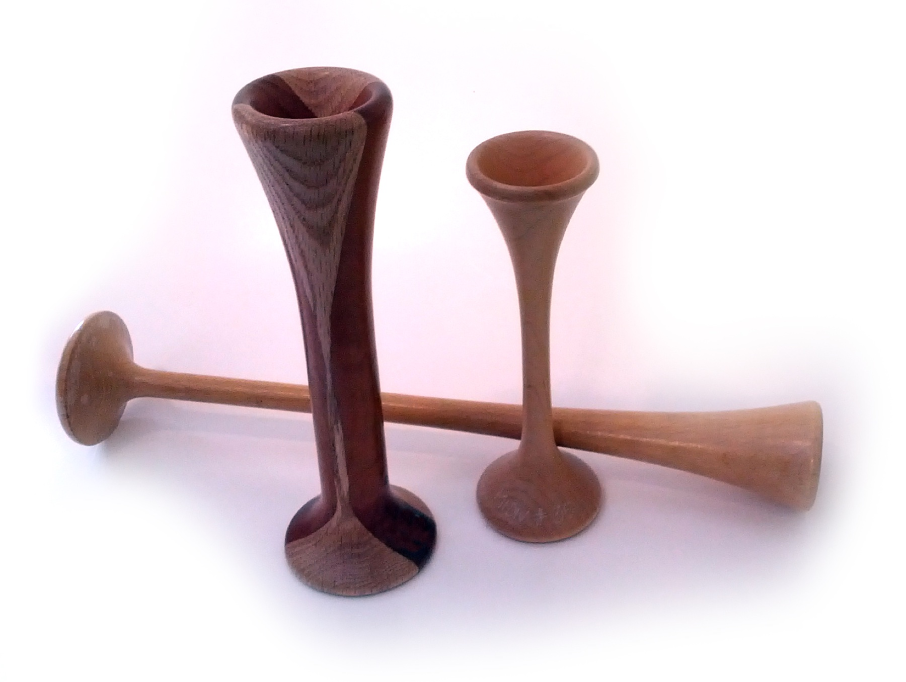

Puzos a partir de ~14 semanas · sonar Doppler ~10–12 (útero acima da sínfise) · Pinard ~18–20 (tentativa ~16) · MF pelo médico ~18–20. Quatro marcos, um degrau.
Certeza clínica: ouvir, sentir e o relógio
ObstetríciaParte D · Certeza clínicaItens 069–087Dado impactante / relógio
Tópico 1
Puzos e o rechaço ≥~14 sem
Certeza clínica = ouvir ou sentir a gestação. Sinal de Puzos = rechaço fetal (ballottement): no toque, empurra-se o polo fetal; sente-se subir e descer e bater no dedo. Macete: Puzos = a criança “dando pulos” no dedo. É sinal mais tardio — pela literatura de prova, a partir de ~14 semanas (os sinais de probabilidade do 1º trimestre vêm antes). (Ressalva de prática: há quem discuta o valor real do rechaço; para prova, vale a literatura.)
Tópico 2
Movimentação: quem sente decide o degrau
Movimentação fetal só entra como certeza se for percebida pelo médico / profissional de saúde que examina. Se a mãe relata que o bebê mexeu = queixa materna = presunção — não certeza. Motivo: no início, a mãe pode confundir com movimento peristáltico, sobretudo na primeira gestação. Movimentação percebida de forma mais clara a partir de ~18–20 semanas (há variação). Âncora prática: quando o útero chega à cicatriz umbilical, fica mais fácil palpar/perceber a movimentação.
Tópico 3
Sonar ~10–12 × Pinard ~18–20
Ausculta dos batimentos é certeza quando positiva no método clínico. Sonar Doppler: BCF a partir de ~10–12 semanas, desde que se palpe o útero acima da sínfise púbica. Estetoscópio de Pinard: ausculta mais típica a partir de ~18–20 semanas; a partir de ~16 semanas pode-se tentar, mas é mais difícil. Pinard = estetoscópio obstétrico em forma de copo/cone (acrílico, madeira ou plástico).
Tópico 4
Não confundir sonar com BCF do US
Não confundir ausculta por sonar (10–12 sem) com detecção de BCF por ultrassom (consegue antes do sonar). US detecta BCF no final da 6ª / início da 7ª (próxima página).
Resumo do relógio de certeza clínica: rechaço ≥~14 sem · MF ~18–20 sem · sonar ~10–12 sem · Pinard ~18–20 sem (tentativa ~16).
Tópico 5
Pré-natal não espera certeza clínica
Sinais de certeza clínica não são pré-requisito para iniciar o pré-natal — o pré-natal começa a partir da possibilidade / hipótese; certeza clínica e US confirmam.
No caso âncora: BCF ao sonar ainda não obtido = ausência de certeza por ausculta (compatível com IG precoce).
[PONTE-A16] Início do pré-natal operacional = A16; aqui só a regra: não esperar Puzos/Pinard para começar.
Relógio da certeza clínica — quem decide o degrau
Marco
Idade gestacional (prova)
Regra de quem decide
Sonar Doppler BCF
~10–12 sem (útero acima da sínfise)
quem ouve com Doppler (profissional)
Puzos / rechaço
≥~14 sem
quem sente o polo fetal (profissional)
Pinard (tentativa)
~16 sem
quem ouve (profissional); mais difícil
Pinard (típica)
~18–20 sem
quem ouve (profissional); confiável
MF (movimentação fetal)
~18–20 sem
quem sente (profissional); NÃO a mãe
Relógio da certeza clínica: 10–12 → 14 → 16 → 18–20 semLinha do tempo dos quatro marcos (sonar, Puzos, Pinard tentativa, Pinard/MF) + vinheta do rechaço (polo fetal com setas sobe/desce). O número é a faixa; a regra é quem sente.Esquema autoral · SVG-piso (S7)

Estetoscópio de Pinard — objeto da certeza por ausculta
O instrumento da certeza tardia: copo/cone que amplia o BCF. Pinard típico a partir de ~18–20 sem; tentativa já a partir de ~16 (mais difícil). É o oposto do sonar (que é o instrumento da certeza precoce).
Pinard horn used by midwives. Photo credit: Wikimedia Commons. Public domain. Source: https://commons.wikimedia.org/wiki/File:Pinard_horn.jpg
Quiz — fixação
Relato materno de “bebê mexendo” classifica-se como:
Gabarito C.Certeza por movimentação exige o profissional sentir; relato da mãe = queixa materna = presunção (pode ser peristalse, sobretudo na primeira gestação).
(A)e (D) sobem o degrau sem o examinador — “quem sente” decide, não a paridade.
(B)probabilidade é ninho (útero–vagina–vulva), não queixa de MF.
Por que cair na A/D:“ela já teve filho, então sabe” — a regra é quem sente, não a paridade.
Em prova, BCF por sonar Doppler é esperado a partir de aproximadamente:
Gabarito C.sonar ~10–12 sem com útero acima da sínfise; US detecta BCF antes (final 6ª/início 7ª); Pinard é mais tardio (~18–20).
(A)saco gestacional — não BCF por sonar.
(B)marcos de embrião/BCF no US, não no sonar de consultório.
(D)faixa de Pinard/MF, não do sonar.
Por que cair na B:fundir relógio de imagem com relógio de ausculta clínica — o sonar de consultório não detecta BCF tão cedo quanto o US.
Iniciar pré-natal exige Puzos positivo?
Gabarito B.Certeza clínica não é pré-requisito; hipótese + lab/US confirmam; Puzos é tardio (≥~14).
(A)atrasa cuidado — esperar Puzos é desperdiçar a janela do 1º trimestre.
(C)mistura limiar de saco com início de pré-natal.
(D)confundir com Pinard/MF — não há “só após 20” no pré-natal.
Por que cair na A:achar que “só com certeza se inicia papel” é a regra leiga, não a clínica.